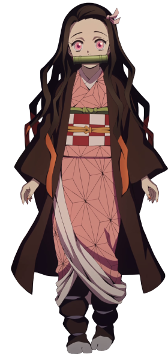

PROTAGONISTS
HASHIRAS
UPPER MOONS

INOSUKE

NEZUKO
NEZUKO


This is a fan website with the purpose to inform about Demon
Slayer characters, sectioned for protagonists,
pillars, and upper moons.
Continue exploring this amazing experience.